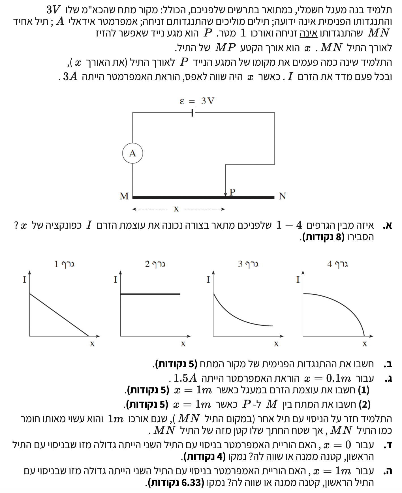

פתרון מודרך, מוסבר ומקיף צעד-אחר-צעד לתלמידים

מקור מתח שהכא"מ שלו \( \varepsilon = 3V \), תיל התנגדות \( MN \) באורך 1 מטר. התלמיד מזיז את המגע הנייד \( P \) ומשנה את האורך \( x \) של הקטע \( MP \), ומודד את הזרם \( I \). התנגדות שאר חוטי החיבור זניחה, האמפרמטר אידיאלי (התנגדותו זניחה).
לבחור איזה מבין 4 הגרפים מתאר נכונה את עוצמת הזרם \( I \) כפונקציה של אורכו של הקטע \( x \), ולהסביר מדוע.
ראשית, נבנה את המשוואה המתארת את הזרם \( I \) במעגל כתלות באורך \( x \). נניח שהתנגדותו של התיל ליחידת אורך היא \( \lambda \), לכן התנגדות הקטע \( MP \) היא \( R_{MP} = \lambda \cdot x \).
המתח על הדקי המקור (מתח הדקים) מבוטא על ידי הנוסחה:
על פי חוק אוהם למעגל החיצוני, מתח זה שווה למתח הנופל על הקטע \( MP \):
נשווה בין שני הביטויים ונבטא את הזרם \( I \):
נציב במקום \( R_{MP} \) את הביטוי התלוי ב-\( x \):
מתוך המשוואה ניתן לראות שכאשר \( x \) גדל, המכנה גדל ולכן ערך השבר כולו (הזרם \( I \)) קטן. מכיוון שהמשתנה \( x \) נמצא במכנה, הקשר אינו לינארי (הגרף אינו קו ישר).
נבחן את הגרפים המוצעים:
הגרף הנכון הוא גרף 3.
הכא"מ הוא \( \varepsilon = 3V \). נתון כי כאשר \( x = 0m \), הוראת האמפרמטר היא \( I = 3A \). כל היחידות נתונות במערכת MKS סטנדרטית ולכן אין צורך בהמרות.
את ההתנגדות הפנימית \( r \) של מקור המתח.
כאשר \( x = 0m \), משמעות הדבר היא שהמגע הנייד נמצא בדיוק בנקודה \( M \). במצב זה, אורך הקטע מהתיל המשתתף במעגל הוא אפס, ולכן התנגדותו היא אפס: \( R_{MP} = 0 \Omega \).
מתוך השוואת חוק אוהם ומתח ההדקים בסעיף א', קיבלנו את המשוואה לזרם: \( I = \frac{\varepsilon}{r + R_x} \). נציב בה את הנתונים:
נפתור את המשוואה עבור \( r \):
התנגדות פנימית: \( r = 1\,\Omega \).
עבור \( x = 0.1m \), הזרם הוא \( I = 1.5A \). חישבנו כבר ש- \( r = 1\Omega \) וש- \( \varepsilon = 3V \).
למצוא את עוצמת הזרם \( I \) במעגל כאשר \( x = 1m \).
בשלב הראשון, נשתמש במשוואת הזרם שפיתחנו עבור המעגל שלנו (\( I = \frac{\varepsilon}{r + R_x} \)) כדי למצוא את ההתנגדות של קטע באורך \( 0.1m \), שנסמן כ- \( R_{0.1} \):
מצאנו שההתנגדות של קטע באורך \( 0.1m \) היא \( 1 \Omega \).
לפי הנוסחה להתנגדות מוליך \( R = \rho\frac{\ell}{A} \), ההתנגדות פרופורציונלית לאורך הקטע (כאשר שטח החתך והחומר קבועים). אנו רוצים לחשב את ההתנגדות של כל התיל \( MN \), כלומר כאשר \( x = 1m \). מכיוון ש- \( 1m \) גדול פי 10 מ- \( 0.1m \), ההתנגדות תגדל גם היא פי 10:
כעת, נציב התנגדות זו בנוסחת הזרם השלמה כדי למצוא את הזרם המתקבל עבור \( x = 1m \):
נחשב את ערך השבר ונעגל ל-3 ספרות מהותיות:
עוצמת הזרם: \( I \approx 0.273\,\text{A} \).
עבור \( x = 1m \), ידוע לנו כי הזרם במעגל הוא \( I = \frac{3}{11} A \), וההתנגדות של הקטע היא למעשה ההתנגדות של כל התיל \( R_{MN} = 10 \Omega \).
את המתח החשמלי \( V_{MP} \) בין הנקודות \( M \) ו-\( P \).
נשתמש בחוק אוהם על קטע התיל המבוקש \( MP \) (שבמקרה זה, כיוון ש- \( x=1m \), כולל את התיל כולו \( MN \)):
נציב את הזרם במעגל כפי שמצאנו בסעיף ג' (1) ואת התנגדות התיל השלם:
נחשב את הערך העשרוני ונעגל ל-3 ספרות מהותיות:
המתח בין הנקודות (דרך א'): \( V_{MP} \approx 2.73\,\text{V} \).
מכיוון שהתיל המשתנה מחובר ישירות להדקי המקור (והתנגדות שאר חוטי החיבור זניחה), המתח עליו שווה בדיוק למתח ההדקים של מקור המתח:
נציב את הכא"מ הנתון, ההתנגדות הפנימית שחישבנו בסעיף ב', והזרם שמצאנו בסעיף ג' (1):
נבצע מכנה משותף ונחשב את המתח:
שתי הדרכים מובילות כמובן בדיוק לאותה התוצאה המדויקת!
המתח בין הנקודות (דרך ב'): \( V_{MP} \approx 2.73\,\text{V} \).
התלמיד מחליף את התיל המקורי בתיל אחר. התיל החדש עשוי מאותו חומר (אותה התנגדות סגולית \( \rho \)), בעל אותו אורך (\( 1m \)), אך שטח החתך שלו (נסמן כ- \( A \) או \( S \)) קטן יותר משל התיל המקורי. מתבוננים במצב בו \( x = 0 \).
האם הוראת האמפרמטר עבור \( x=0 \) תהיה גדולה מזו שבניסוי הראשון, קטנה ממנה או שווה לה? ונמק.
כאשר \( x = 0 \), משמעות הדבר היא שזרם כלל אינו זורם דרך התיל המשתנה \( MN \). המגע הנייד מאפשר מעבר של הזרם חזרה למקור לפני שהוא עובר בתיל. במצב זה, תכונות התיל (אורכו, שטחו, החומר ממנו הוא עשוי) אינן משפיעות כלל על המעגל.
הזרם נקבע אך ורק על פי הכא"מ וההתנגדות הפנימית של מקור המתח. לפי המשוואה שפיתחנו (\( I = \frac{\varepsilon}{r+R_{MP}} \)), כאשר התנגדות המעגל החיצוני שווה לאפס הזרם יישאר ללא שינוי:
הוראת האמפרמטר: שווה להוראתו בניסוי הראשון.
כמו בסעיף הקודם, שטח החתך של התיל קטן יותר. כעת מתבוננים במצב בו \( x = 1m \) (כלומר, כל התיל מחובר למעגל).
האם הוראת האמפרמטר עבור \( x=1m \) תהיה גדולה מזו שבניסוי הראשון, קטנה ממנה או שווה לה? ונמק.
לפי הנוסחה להתנגדות של תיל מהדף, \( R = \rho\frac{\ell}{A} \), ניתן לראות כי ההתנגדות \( R \) עומדת ביחס הפוך לשטח החתך \( A \) של התיל.
מכיוון ששטח החתך של התיל החדש קטן יותר \( (A_{\text{new}} < A_{\text{old}}) \), ואורכו נשאר זהה \( \ell = 1m \), התנגדות התיל החדש תהיה גדולה יותר מזו של התיל המקורי \( (R_{\text{new}} > R_{\text{old}}) \).
כעת, נסתכל על הקשר שמצאנו עבור עוצמת הזרם מתוך מתח ההדקים: \( I = \frac{\varepsilon}{r + R_{MN}} \). מכיוון שההתנגדות הכוללת של המעגל (המכנה שלנו) גדלה בעוד שהכא"מ קבוע, עוצמת הזרם \( I \) במעגל כולו תהיה קטנה יותר בהשוואה לניסוי הראשון.
הוראת האמפרמטר: קטנה מזו שבניסוי הראשון.